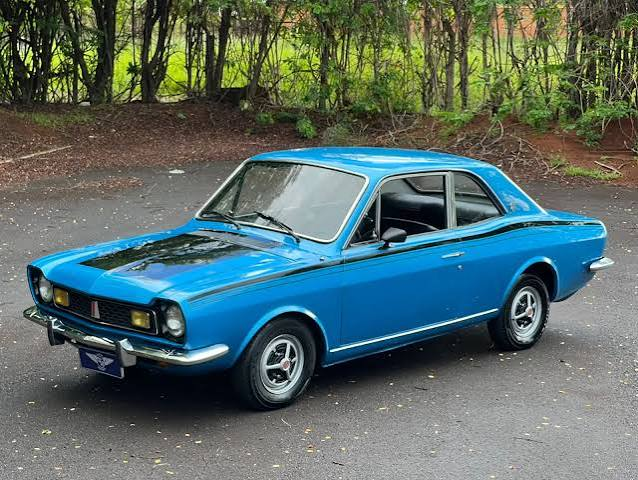

OLDSCHOOL
Ficha Técnica
Ano
1969 - 1977
Motor
1.4 | 4 cilindros
Potência
85 cv
Câmbio
Manual | 4 marchas
Tração
Dianteira
Carroceria
Coupé
Combustível
Gasolina
FIPE
R$ 35.000 ~ R$ 90.000
O Corcel com espírito esportivo
O Corcel GT foi a versão esportiva de um dos modelos mais importantes da Ford no Brasil. Com visual mais agressivo, detalhes exclusivos e motor mais forte, conquistou os jovens da época e ajudou a popularizar a ideia de carro esportivo nacional. Hoje, é um clássico valorizado por sua história e personalidade.